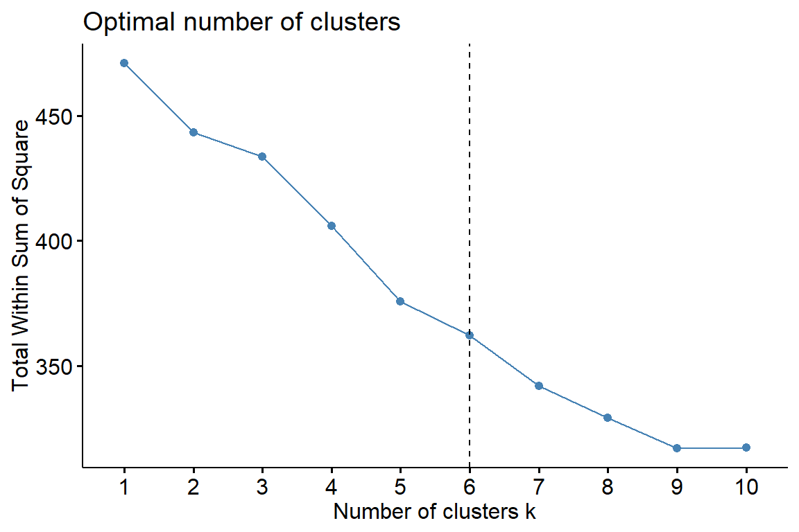
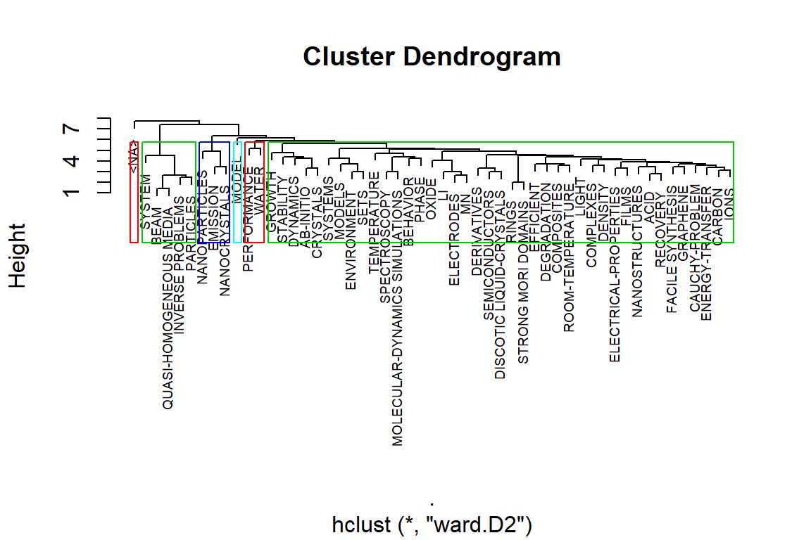
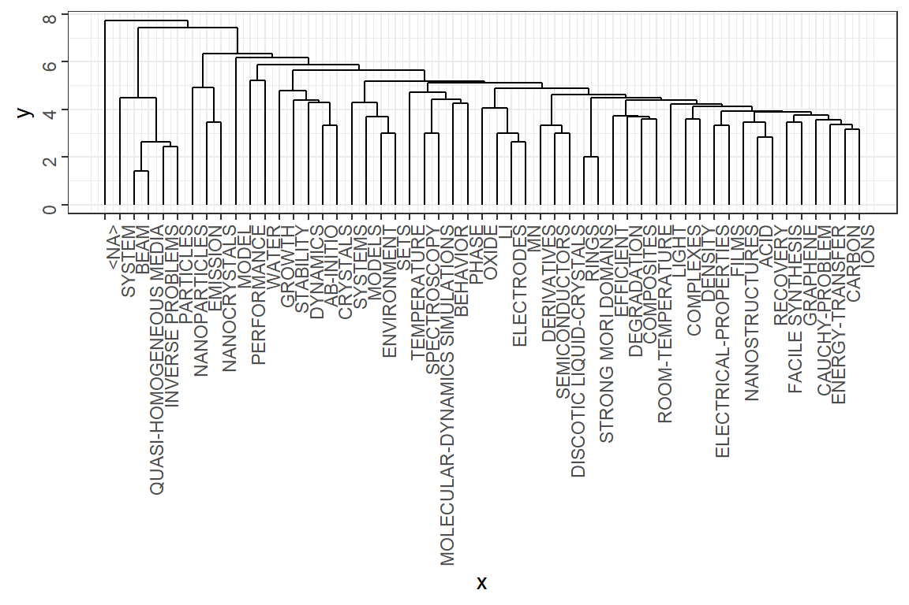
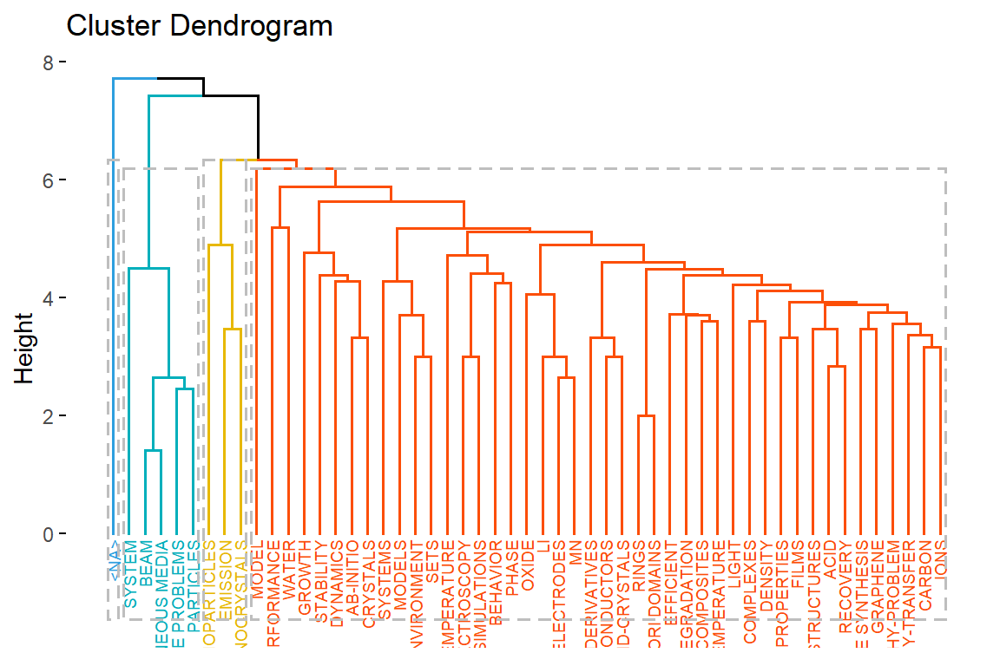
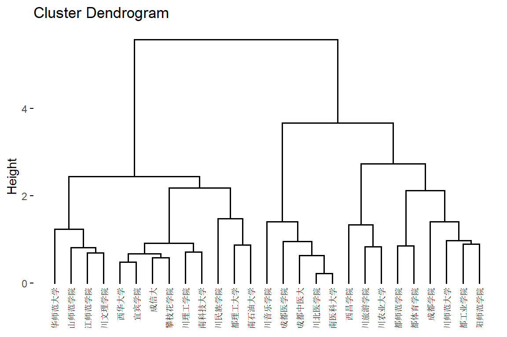
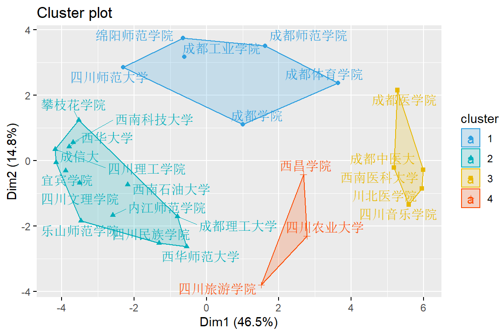

第 16 章 共现矩阵在信息服务中的应用

共现矩阵及其在信息服务中的应用.
16.1 邻接矩阵
| kw1 | kw2 | kw3 | ||
|---|---|---|---|---|
| paper1 | ||||
| paper2 | ||||
| paper3 |
邻接矩阵可以产生两个矩阵：共现矩阵和距离矩阵。
16.1.1 共现矩阵
| kw1 | kw2 | kw3 | ||
|---|---|---|---|---|
| kw1 | ||||
| kw2 | ||||
| kw3 |
16.1.2 距离矩阵
| paper1 | paper2 | paper3 | ||
|---|---|---|---|---|
| paper1 | ||||
| paper2 | ||||
| paper3 |
这里表中的列，关键词kw1,kw2,kw3是可以替换成作者、合作机构、参考文献等。 而表中的行的paper1,paper2,paper3可以替换成文章的属性如所属学科、所发表的期刊、等级等
聚类方法有很多种，我们这里用到的是层级聚类
16.2 聚类案例1：主题词聚类
# Load Packages
library(tidyverse)
library(stringr)
library(cluster)
library(dendextend)
library(lsa)
library(ggdendro)选择文章的唯一识别码UT（可能后期会提取关键信息作为识别码），主题词ID这2列
df <- scient_df3 %>%
select(UT, ID) %>%
separate_rows(ID, sep = ";") %>%
add_count(UT, ID) %>%
distinct() %>%
spread(ID, n) %>%
mutate_all(~replace_na(., 0)) %>%
column_to_rownames(var = "UT") %>%
select_if( ~sum(.) > 5 ) %>% # select wordfrequence >50
as.matrix() %>%
t()
#head(df)不应该将所有文章都来做主题词聚类，后面要做筛选，比如（某个主题+被引比较多）的才做聚类分析
聚几个类？事实上不需要这个。因为，和kmeans聚类不同的是，层级聚类不需要指定聚类数量。
library(factoextra)
fviz_nbclust(df, kmeans, method = "wss") +
geom_vline(xintercept = 6, linetype = 2)
计算距离
可以tidy?
可视化


# plot 2
library(factoextra)
#fviz_dend(hc, cex = 0.5)
fviz_dend(hc, k = 4, # Cut in four groups
cex = 0.5, # label size
k_colors = c("#2E9FDF", "#00AFBB", "#E7B800", "#FC4E07"),
color_labels_by_k = TRUE, # color labels by groups
rect = TRUE # Add rectangle around groups
)
16.3 聚类案例2：若干学校的聚类
先整理成如下样式
| dis1 | dis2 | dis3 | dis4 | |
|---|---|---|---|---|
| univ1 | ||||
| univ2 | ||||
| univ3 |
然后求出相似矩阵。
SimMatrix <- complete_set %>%
group_by(University_cn, Category_ESI_cn) %>%
summarise(n = n()) %>%
filter(!is.na(Category_ESI_cn)) %>%
spread(Category_ESI_cn, n) %>%
mutate_all(~replace_na(., 0)) %>%
ungroup() %>%
mutate_at(vars(-University_cn), funs(./sum(.)) ) %>%
column_to_rownames(var = "University_cn") %>%
as.matrix() %>%
t() %>%
cosine()
#mutate_at(vars(-University_cn), as.numeric) %>%
#mutate_at(vars(-University_cn), ~scale(., center = T, scale = T))
SimMatrix ## 成都工业学院 成都理工大学 成都师范学院
## 成都工业学院 1.00000 0.22023 0.60161
## 成都理工大学 0.22023 1.00000 0.14415
## 成都师范学院 0.60161 0.14415 1.00000
## 成都体育学院 0.32330 0.15067 0.75142
## 成都学院 0.38199 0.17079 0.40665
## 成都医学院 0.47726 0.06618 0.58525
## 成都中医大 0.21529 0.08893 0.28030
## 成信大 0.46452 0.68330 0.26051
## 川北医学院 0.19777 0.07363 0.09458
## 乐山师范学院 0.21736 0.28511 0.18291
## 绵阳师范学院 0.71440 0.37091 0.67821
## 内江师范学院 0.25670 0.24081 0.19201
## 攀枝花学院 0.51911 0.40818 0.31176
## 四川理工学院 0.52847 0.31542 0.34442
## 四川旅游学院 0.04856 0.07436 0.06672
## 四川民族学院 0.15853 0.22037 0.11086
## 四川农业大学 0.04067 0.16453 0.11793
## 四川师范大学 0.59349 0.23909 0.67333
## 四川文理学院 0.58415 0.29281 0.19028
## 四川音乐学院 0.31505 0.01147 0.01094
## 西昌学院 0.09097 0.24534 0.24871
## 西华大学 0.53702 0.33742 0.32278
## 西华师范大学 0.15788 0.20670 0.15196
## 西南科技大学 0.63818 0.44361 0.20259
## 西南石油大学 0.35406 0.62533 0.20755
## 西南医科大学 0.26267 0.06121 0.18219
## 宜宾学院 0.49076 0.29261 0.26099
## 成都体育学院 成都学院 成都医学院
## 成都工业学院 0.323301 0.3820 0.47726
## 成都理工大学 0.150669 0.1708 0.06618
## 成都师范学院 0.751420 0.4067 0.58525
## 成都体育学院 1.000000 0.2480 0.50126
## 成都学院 0.248015 1.0000 0.57158
## 成都医学院 0.501257 0.5716 1.00000
## 成都中医大 0.267255 0.5440 0.61103
## 成信大 0.106922 0.3757 0.08891
## 川北医学院 0.224355 0.4663 0.69331
## 乐山师范学院 0.023726 0.3879 0.10735
## 绵阳师范学院 0.590028 0.4592 0.55789
## 内江师范学院 0.144761 0.2582 0.11216
## 攀枝花学院 0.281874 0.4397 0.16966
## 四川理工学院 0.125160 0.4686 0.20861
## 四川旅游学院 0.034198 0.4758 0.10114
## 四川民族学院 0.007262 0.2685 0.06728
## 四川农业大学 0.150790 0.5649 0.35234
## 四川师范大学 0.489260 0.6851 0.33711
## 四川文理学院 0.017672 0.2368 0.06217
## 四川音乐学院 0.000000 0.2351 0.51042
## 西昌学院 0.684815 0.2306 0.18778
## 西华大学 0.155100 0.4862 0.15079
## 西华师范大学 0.139533 0.1359 0.10464
## 西南科技大学 0.081743 0.5383 0.11848
## 西南石油大学 0.083022 0.5202 0.08268
## 西南医科大学 0.232931 0.5360 0.79129
## 宜宾学院 0.035156 0.4645 0.11904
## 成都中医大 成信大 川北医学院
## 成都工业学院 0.21529 0.46452 0.19777
## 成都理工大学 0.08893 0.68330 0.07363
## 成都师范学院 0.28030 0.26051 0.09458
## 成都体育学院 0.26725 0.10692 0.22435
## 成都学院 0.54398 0.37571 0.46625
## 成都医学院 0.61103 0.08891 0.69331
## 成都中医大 1.00000 0.10374 0.68646
## 成信大 0.10374 1.00000 0.11692
## 川北医学院 0.68646 0.11692 1.00000
## 乐山师范学院 0.17688 0.63450 0.10236
## 绵阳师范学院 0.32770 0.50020 0.28671
## 内江师范学院 0.12097 0.56126 0.09948
## 攀枝花学院 0.20772 0.83785 0.20411
## 四川理工学院 0.20097 0.71126 0.11261
## 四川旅游学院 0.13294 0.25365 0.12116
## 四川民族学院 0.05757 0.53073 0.05969
## 四川农业大学 0.26840 0.15079 0.29897
## 四川师范大学 0.15760 0.62443 0.09216
## 四川文理学院 0.14820 0.54594 0.04273
## 四川音乐学院 0.40723 0.06612 0.48255
## 西昌学院 0.31760 0.20253 0.27293
## 西华大学 0.22263 0.75385 0.11663
## 西华师范大学 0.11959 0.24414 0.06434
## 西南科技大学 0.15430 0.63160 0.11294
## 西南石油大学 0.08567 0.61261 0.06647
## 西南医科大学 0.77502 0.10824 0.97157
## 宜宾学院 0.13020 0.80262 0.11171
## 乐山师范学院 绵阳师范学院 内江师范学院
## 成都工业学院 0.21736 0.7144 0.256701
## 成都理工大学 0.28511 0.3709 0.240814
## 成都师范学院 0.18291 0.6782 0.192011
## 成都体育学院 0.02373 0.5900 0.144761
## 成都学院 0.38794 0.4592 0.258203
## 成都医学院 0.10735 0.5579 0.112165
## 成都中医大 0.17688 0.3277 0.120970
## 成信大 0.63450 0.5002 0.561264
## 川北医学院 0.10236 0.2867 0.099482
## 乐山师范学院 1.00000 0.4819 0.787653
## 绵阳师范学院 0.48185 1.0000 0.385302
## 内江师范学院 0.78765 0.3853 1.000000
## 攀枝花学院 0.60382 0.6306 0.540092
## 四川理工学院 0.77452 0.5251 0.791628
## 四川旅游学院 0.36459 0.1944 0.188938
## 四川民族学院 0.62538 0.3005 0.171672
## 四川农业大学 0.33484 0.3801 0.162996
## 四川师范大学 0.46999 0.6310 0.493393
## 四川文理学院 0.68299 0.4985 0.759176
## 四川音乐学院 0.01539 0.3648 0.007179
## 西昌学院 0.18410 0.5171 0.213242
## 西华大学 0.67299 0.5422 0.390058
## 西华师范大学 0.72396 0.3817 0.842294
## 西南科技大学 0.54926 0.5796 0.429444
## 西南石油大学 0.33714 0.3222 0.304089
## 西南医科大学 0.12335 0.3291 0.098681
## 宜宾学院 0.67251 0.4857 0.562976
## 攀枝花学院 四川理工学院 四川旅游学院
## 成都工业学院 0.5191 0.52847 0.04856
## 成都理工大学 0.4082 0.31542 0.07436
## 成都师范学院 0.3118 0.34442 0.06672
## 成都体育学院 0.2819 0.12516 0.03420
## 成都学院 0.4397 0.46861 0.47580
## 成都医学院 0.1697 0.20861 0.10114
## 成都中医大 0.2077 0.20097 0.13294
## 成信大 0.8378 0.71126 0.25365
## 川北医学院 0.2041 0.11261 0.12116
## 乐山师范学院 0.6038 0.77452 0.36459
## 绵阳师范学院 0.6306 0.52505 0.19442
## 内江师范学院 0.5401 0.79163 0.18894
## 攀枝花学院 1.0000 0.79195 0.24303
## 四川理工学院 0.7919 1.00000 0.27160
## 四川旅游学院 0.2430 0.27160 1.00000
## 四川民族学院 0.4282 0.36092 0.23635
## 四川农业大学 0.2629 0.16081 0.57838
## 四川师范大学 0.6782 0.65072 0.18669
## 四川文理学院 0.5482 0.77729 0.08250
## 四川音乐学院 0.1333 0.07502 0.00000
## 西昌学院 0.4431 0.11683 0.28823
## 西华大学 0.7793 0.70374 0.34631
## 西华师范大学 0.2159 0.57362 0.08664
## 西南科技大学 0.7487 0.75705 0.23045
## 西南石油大学 0.5003 0.52811 0.16657
## 西南医科大学 0.1841 0.13957 0.14810
## 宜宾学院 0.8071 0.75108 0.46250
## 四川民族学院 四川农业大学 四川师范大学
## 成都工业学院 0.158528 0.04067 0.59349
## 成都理工大学 0.220370 0.16453 0.23909
## 成都师范学院 0.110856 0.11793 0.67333
## 成都体育学院 0.007262 0.15079 0.48926
## 成都学院 0.268472 0.56487 0.68509
## 成都医学院 0.067283 0.35234 0.33711
## 成都中医大 0.057575 0.26840 0.15760
## 成信大 0.530732 0.15079 0.62443
## 川北医学院 0.059689 0.29897 0.09216
## 乐山师范学院 0.625381 0.33484 0.46999
## 绵阳师范学院 0.300525 0.38013 0.63098
## 内江师范学院 0.171672 0.16300 0.49339
## 攀枝花学院 0.428156 0.26290 0.67815
## 四川理工学院 0.360916 0.16081 0.65072
## 四川旅游学院 0.236352 0.57838 0.18669
## 四川民族学院 1.000000 0.13267 0.33880
## 四川农业大学 0.132671 1.00000 0.22735
## 四川师范大学 0.338801 0.22735 1.00000
## 四川文理学院 0.286435 0.06916 0.46548
## 四川音乐学院 0.000000 0.04761 0.02824
## 西昌学院 0.076613 0.53138 0.27966
## 西华大学 0.745915 0.24150 0.58382
## 西华师范大学 0.085005 0.13462 0.23479
## 西南科技大学 0.357864 0.27297 0.57292
## 西南石油大学 0.237429 0.19119 0.50651
## 西南医科大学 0.074160 0.31519 0.12542
## 宜宾学院 0.542047 0.35538 0.64596
## 四川文理学院 四川音乐学院 西昌学院
## 成都工业学院 0.58415 0.315045 0.09097
## 成都理工大学 0.29281 0.011471 0.24534
## 成都师范学院 0.19028 0.010942 0.24871
## 成都体育学院 0.01767 0.000000 0.68481
## 成都学院 0.23685 0.235145 0.23057
## 成都医学院 0.06217 0.510422 0.18778
## 成都中医大 0.14820 0.407230 0.31760
## 成信大 0.54594 0.066123 0.20253
## 川北医学院 0.04273 0.482555 0.27293
## 乐山师范学院 0.68299 0.015388 0.18410
## 绵阳师范学院 0.49850 0.364776 0.51709
## 内江师范学院 0.75918 0.007179 0.21324
## 攀枝花学院 0.54824 0.133328 0.44307
## 四川理工学院 0.77729 0.075022 0.11683
## 四川旅游学院 0.08250 0.000000 0.28823
## 四川民族学院 0.28643 0.000000 0.07661
## 四川农业大学 0.06916 0.047606 0.53138
## 四川师范大学 0.46548 0.028238 0.27966
## 四川文理学院 1.00000 0.000000 0.11135
## 四川音乐学院 0.00000 1.000000 0.01509
## 西昌学院 0.11135 0.015089 1.00000
## 西华大学 0.58452 0.026147 0.25330
## 西华师范大学 0.67618 0.013669 0.16611
## 西南科技大学 0.71586 0.056033 0.24265
## 西南石油大学 0.37281 0.033274 0.13338
## 西南医科大学 0.06384 0.533754 0.22448
## 宜宾学院 0.62904 0.004169 0.23382
## 西华大学 西华师范大学 西南科技大学
## 成都工业学院 0.53702 0.15788 0.63818
## 成都理工大学 0.33742 0.20670 0.44361
## 成都师范学院 0.32278 0.15196 0.20259
## 成都体育学院 0.15510 0.13953 0.08174
## 成都学院 0.48624 0.13590 0.53829
## 成都医学院 0.15079 0.10464 0.11848
## 成都中医大 0.22263 0.11959 0.15430
## 成信大 0.75385 0.24414 0.63160
## 川北医学院 0.11663 0.06434 0.11294
## 乐山师范学院 0.67299 0.72396 0.54926
## 绵阳师范学院 0.54225 0.38167 0.57961
## 内江师范学院 0.39006 0.84229 0.42944
## 攀枝花学院 0.77927 0.21589 0.74870
## 四川理工学院 0.70374 0.57362 0.75705
## 四川旅游学院 0.34631 0.08664 0.23045
## 四川民族学院 0.74591 0.08501 0.35786
## 四川农业大学 0.24150 0.13462 0.27297
## 四川师范大学 0.58382 0.23479 0.57292
## 四川文理学院 0.58452 0.67618 0.71586
## 四川音乐学院 0.02615 0.01367 0.05603
## 西昌学院 0.25330 0.16611 0.24265
## 西华大学 1.00000 0.17789 0.74628
## 西华师范大学 0.17789 1.00000 0.34142
## 西南科技大学 0.74628 0.34142 1.00000
## 西南石油大学 0.58265 0.16918 0.69775
## 西南医科大学 0.13812 0.06866 0.11377
## 宜宾学院 0.81381 0.18599 0.64071
## 西南石油大学 西南医科大学 宜宾学院
## 成都工业学院 0.35406 0.26267 0.490762
## 成都理工大学 0.62533 0.06121 0.292609
## 成都师范学院 0.20755 0.18219 0.260987
## 成都体育学院 0.08302 0.23293 0.035156
## 成都学院 0.52025 0.53600 0.464549
## 成都医学院 0.08268 0.79129 0.119042
## 成都中医大 0.08567 0.77502 0.130196
## 成信大 0.61261 0.10824 0.802619
## 川北医学院 0.06647 0.97157 0.111707
## 乐山师范学院 0.33714 0.12335 0.672507
## 绵阳师范学院 0.32222 0.32910 0.485741
## 内江师范学院 0.30409 0.09868 0.562976
## 攀枝花学院 0.50028 0.18414 0.807113
## 四川理工学院 0.52811 0.13957 0.751085
## 四川旅游学院 0.16657 0.14810 0.462504
## 四川民族学院 0.23743 0.07416 0.542047
## 四川农业大学 0.19119 0.31519 0.355380
## 四川师范大学 0.50651 0.12542 0.645963
## 四川文理学院 0.37281 0.06384 0.629039
## 四川音乐学院 0.03327 0.53375 0.004169
## 西昌学院 0.13338 0.22448 0.233819
## 西华大学 0.58265 0.13812 0.813810
## 西华师范大学 0.16918 0.06866 0.185991
## 西南科技大学 0.69775 0.11377 0.640706
## 西南石油大学 1.00000 0.06248 0.497676
## 西南医科大学 0.06248 1.00000 0.139897
## 宜宾学院 0.49768 0.13990 1.000000计算距离矩阵，并作聚类可视化
df <- 1 - SimMatrix
# Ward's method
hc <- df %>%
dist(method = "euclidean") %>%
hclust(method = "ward.D2") # method = "complete" | "average"

# Cut in 4 groups and color by groups
fviz_dend(hc, k = 4, # Cut in four groups
cex = 0.5, # label size
k_colors = c("#2E9FDF", "#00AFBB", "#E7B800", "#FC4E07"),
color_labels_by_k = TRUE, # color labels by groups
rect = TRUE # Add rectangle around groups
)
# Cut tree into 6 groups
sub_grp <- cutree(hc, k = 4)
fviz_cluster(list(data = df, cluster = sub_grp),
palette = c("#2E9FDF", "#00AFBB", "#E7B800", "#FC4E07"),
ellipse.type = "convex", # Concentration ellipse
repel = TRUE, # Avoid label overplotting (slow)
show.clust.cent = FALSE)
# plot 3
library(ggdendro)#https://github.com/andrie/ggdendro
library(showtext)
showtext_auto()
ggdendrogram(hc, rotate = TRUE,
size = 4, theme_dendro = FALSE) +
labs(x = "", y = "")